最近公司在用到SpringBoot整合Mybatis时当web端页面数据增多时需要使用分页查询以方便来展示数据。本人对分页查询进行了一些步骤的总结，希望能够帮助到有需要的博友。如有更好的方式，也希望评论留言，本人以作更好的改进。
以下介绍实战中数据库框架使用的是mybatis，对整合mybatis此处不做介绍。
使用pageHelper实现分页查询其实非常简单，共三步：
一、导入依赖；
推荐博友可以上maven中央仓库去找合适的版本进行PageHelper的依赖导入
maven中央仓库地址：https://mvnrepository.com
进入maven中央仓库后在搜索框搜索PageHelper,选择合适的版本
pagehelper支持多种数据库：Oracle,MySql,MariaDB,SQLite,DB2,PostgreSQL,SqlServer 等
在这里我们选择pageHelper-spring-boot-starter
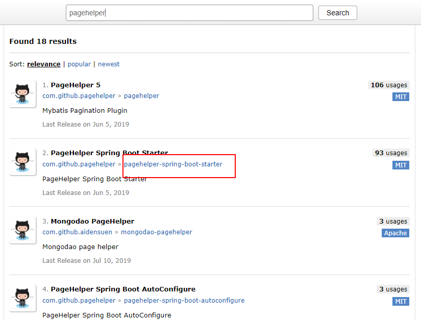
，点击进入后根据项目需要选择版本，在这里我选择1.2.12的最新版本
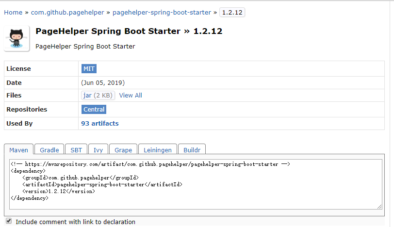
复制maven依赖，添加至项目的pom.xml中
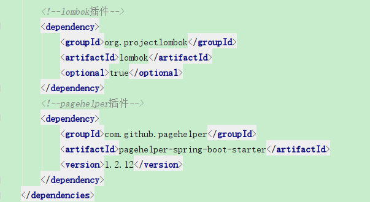
至此，PageHelper插件就引入完成。
二、添加配置；
aplication.yml或aplication.xml中添加配置：
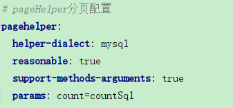
配置项说明：
1.helperDialect：指定数据库
2.reasonable：默认是false。启用合理化时，如果pageNum<1会查询第一页，如果pageNum>pages（最大页数）会查询最后一页。
禁用合理化时，如果pageNum<1或pageNum>pages会返回空数据
3.supportMethodsArguments：是否支持接口参数来传递分页参数，默认false
4.params：为了支持startPage(Object params)方法，增加了该参数来配置参数映射，用于从对象中根据属性名取值，
可以配置 pageNum,pageSize,count,pageSizeZero,reasonable，不配置映射的用默认值，
默认值为pageNum=pageNum;pageSize=pageSize;count=countSql;reasonable=reasonable;pageSizeZero=pageSizeZero
其余参数详情请看官方文档：https://pagehelper.github.io/docs/howtouse
除此之外介绍另外一种方法：
编写分页bean类，注意：这个类一定要放在springboot启动类所在位置的平级或子级的包中，保证能springboot扫描到。
import java.util.Properties;
import org.apache.ibatis.plugin.Interceptor;
import org.mybatis.spring.SqlSessionFactoryBean;
import org.springframework.context.annotation.Bean;
import org.springframework.context.annotation.Configuration;
import com.github.pagehelper.PageHelper;
@Configuration
public class PageHelperBean {
@Bean
PageHelper pageHelper(){
//分页插件
PageHelper pageHelper = new PageHelper();
Properties properties = new Properties();
properties.setProperty("reasonable", "true");
properties.setProperty("supportMethodsArguments", "true");
properties.setProperty("returnPageInfo", "check");
properties.setProperty("params", "count=countSql");
pageHelper.setProperties(properties);
//添加插件
new SqlSessionFactoryBean().setPlugins(new Interceptor[]{pageHelper});
return pageHelper;
}
}
本人使用第一种方式（推荐使用）
三、在程序代码中使用分页查询；
<1>.接口层（Mapper层）代码展示：
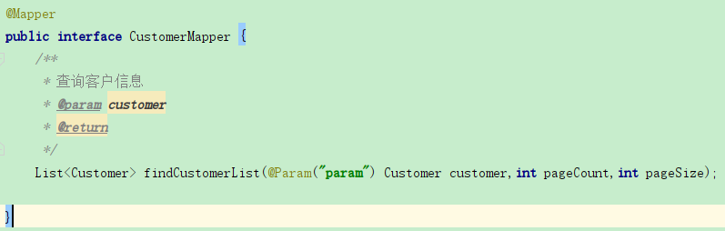
<2.>业务层(service层)代码展示：
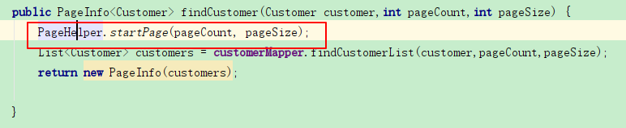
注：使用PageHelper.startPage()方法设置分页：pageCount:当前页数 pageSize:每页显示的总记录数
<3.>控制器层(controller层)代码展示:
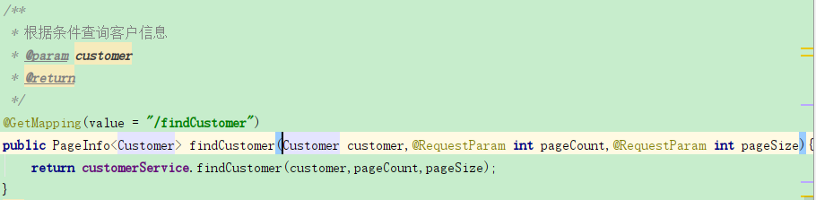
使用postman工作对方法进行测试：
get请求，输入参数后进行测试
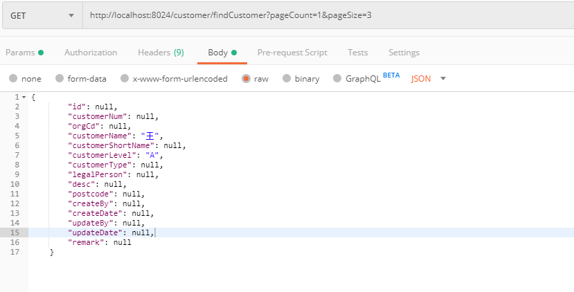
测试结果如下：
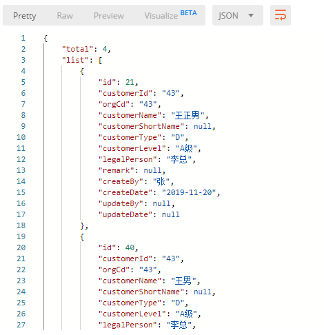
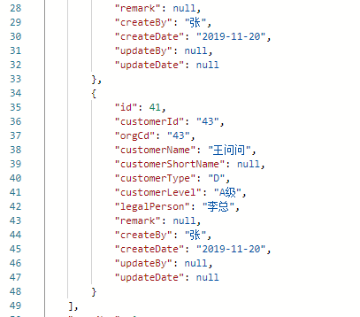
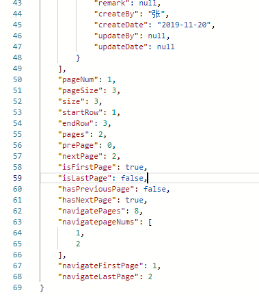
当传入参数pageCount=1,pageSize=3时，total记录为4，进行了分页操作，第一个记录了三条数据，共两页
总结： 使用pagehelper插件后写sql时不需要再在mapper.xml文件中写分页，简化了代码，提高开发效率